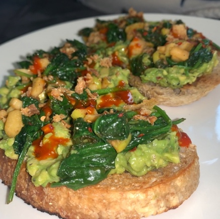

Get out your blender. We are making a layered acai bowl so you will need 3 containers to separate this out.
Combine the strawberries bananas and acai and 1 cup of the oat milk. Blend until the consistently is think and all combined.
Stop the blender and add half a tablespoon of cinnamon. Blend and set that aside.
In another blender, combine the mangos and half a cup of oat milk. Blend until the fruit and oat milk is all combined. Set that aside.
Combine the spinach and the remainder of the oat milk. Blend until the fruit and oat milk is combined. Add the remainder of the cinnamon.
Blend and set aside.
Now you will need a bowl. Pour the first batch in. then second batch and finally add the third batch. Top with granola and peanut butter.
Enjoy!
Avocado Toast

Ingredients:
1 avocado
2 slices of sourdough bread
½ cup of spinach
Truffle hot sauce
Salt and pepper
Half a green apple
Butter
Instructions:
Slice open the avocado and smush it. Make sure the consistency has chunks in it
Slice half a green apple. In a skillet, sauté the apples until they get a little brown and then add the spinach to it.
Sauté both until the spinach wilts down.
In a separate pan, add butter to the pan and toast the sourdough bread. Let it toast until golden brown.
Add the avocado to the bread, and top with spinach and apples. Lastly drizzle with hot truffle sauce.